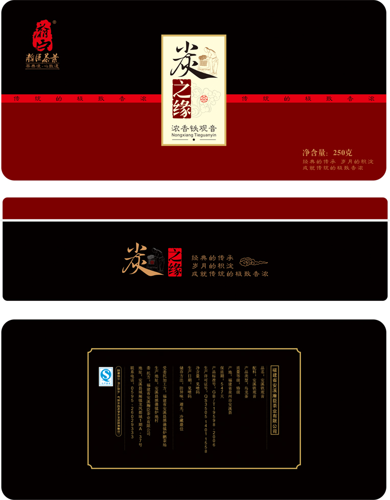
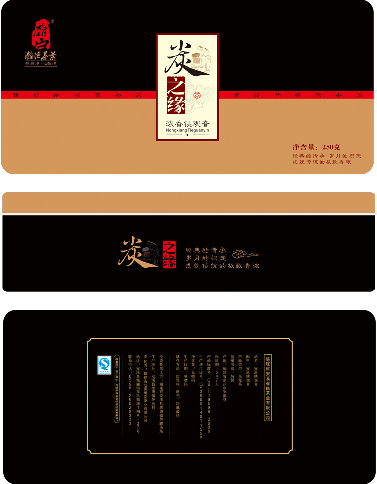

公司背景
翰臣茶业，淘宝知名茶行业品牌，一度成为网商界的传奇品牌之一。2013年在淘宝天猫平台上崭露头角，聘有强力运营团队。
在企业入驻天猫伊始，他们就考虑到产品的视觉和包装上特色如何迎合淘宝大众消费者的需求，
偶然间通过同行介绍了解到我司，2013春季很快和我司达成战略性的合作...
天猫产品包装规划设计
我们通过深度的洽谈和对翰臣茶业销售市场的了解和分析，在对其消费人群的趋向上做了统计。包装上我们抓住“中国红”“贵族黑”
两种中国传统的色素，紧紧抓住茶友心中实实在在生活的愿想。
不管是在产品的开发上抑或是天猫商城页面的规划，我们紧扣着“茶，生活味”，让每一个消费者带走的不仅仅是商品还有我们的生活态度。
服务内容
1、品牌市场分析与定位
2、品牌消费群体特点分析
3、产品及包装设计及营销开发
4、CRM老顾客维护系统开发
 